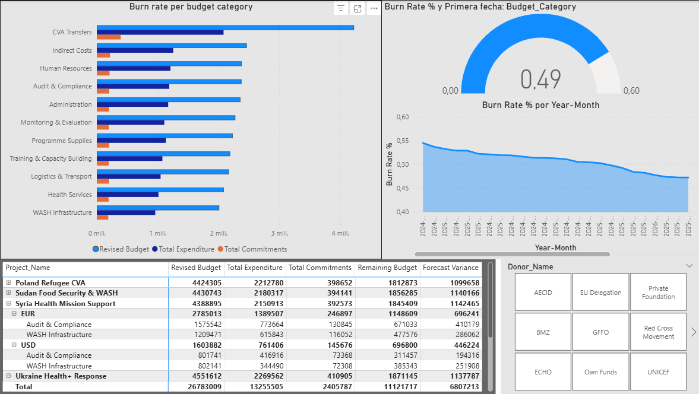
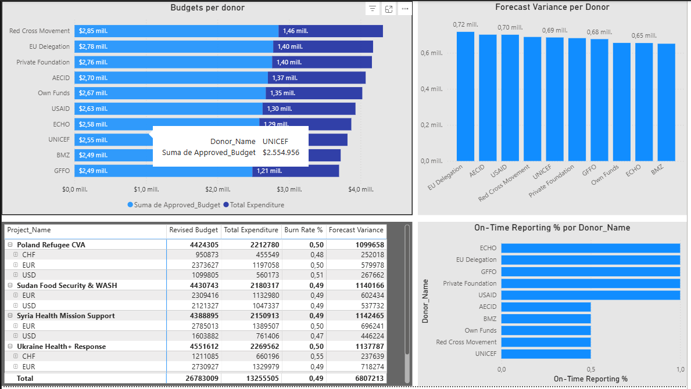
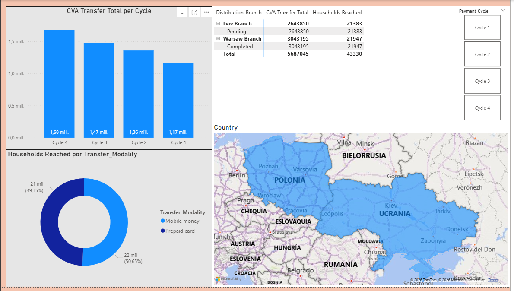

Burn Rate
Budget monitoring and expenditure pacing for donor-funded humanitarian portfolios.
Power BI Portfolio Pack
Power BI dashboard using synthetic humanitarian datasets inspired by finance, CVA and donor environments. The pack is designed for quick recruiter review and deeper technical inspection.


Budget monitoring and expenditure pacing for donor-funded humanitarian portfolios.

Donor compliance, funding mix and reporting logic across institutional frameworks.

Cash and voucher assistance monitoring connected to operational delivery.